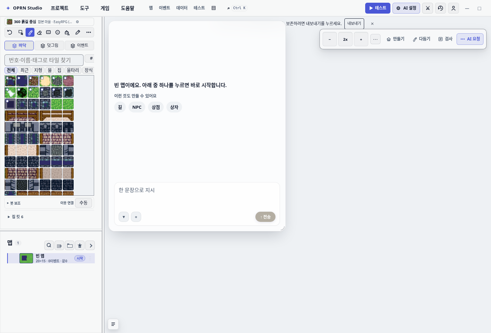
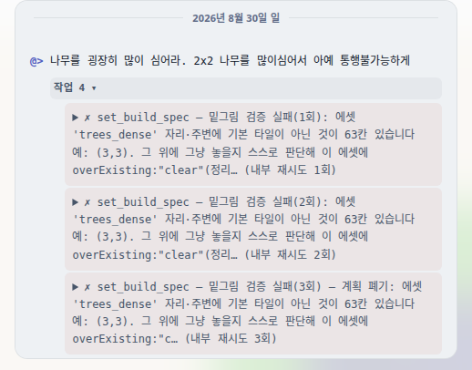
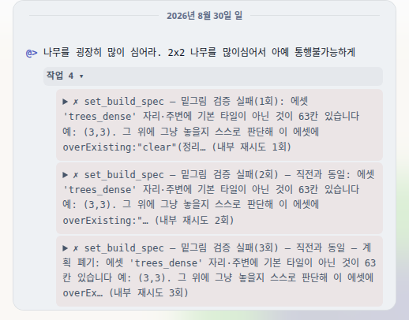
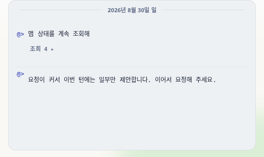
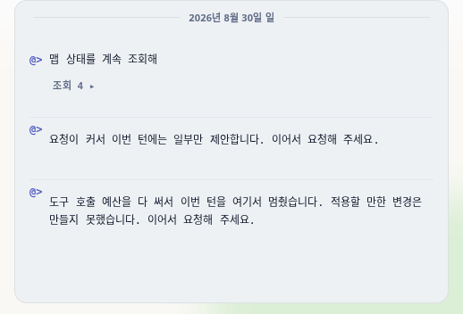
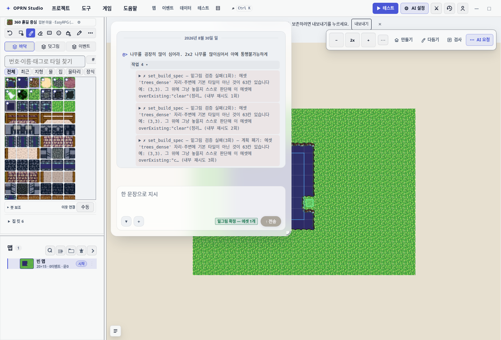
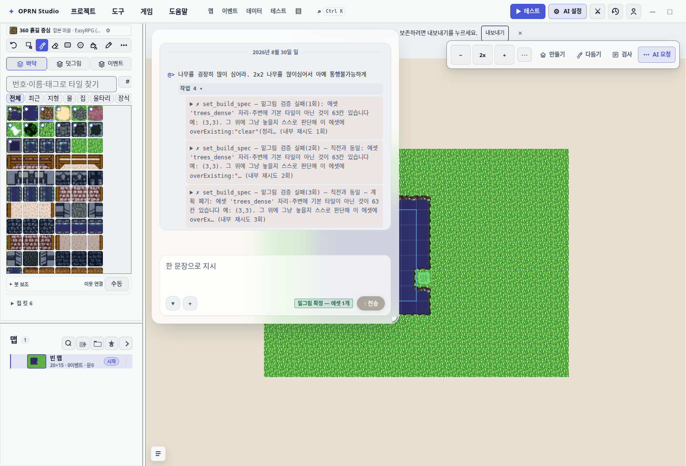
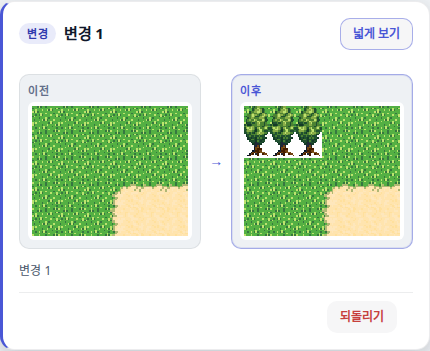
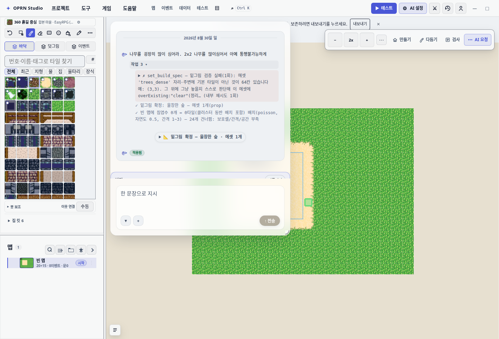

조수 잘못이 아니었다. 우리가 대답할 칸을 안 만들어 준 것이었다.
맵에 나무를 심으려면 조수는 먼저 “설계도”를 제출하고 통과해야 한다. 그 자리에 이미 다른 게 깔려 있으면
검사기는 “overExisting 을 적어서 다시 내라” 고 되돌려보낸다. 그런데 설계도 양식 자체에
그 칸이 없었다. 조수는 시킨 대로 적을 방법이 없어서, 똑같은 설계도를 계속 다시 냈다.
그렇게 9번 튕기고 한 턴에 쓸 수 있는 작업 횟수를 다 태웠고, 만들어 둔 313칸은 맵에 적용되지 못했다.
양식에 칸을 만들어 줬다. 그리고 조수가 같은 것을 또 내면 “직전과 똑같다, 이번엔 이 칸을 채워라” 라고 분명히 말해 주게 했다. 예산을 다 써서 멈출 때 아무 말 없이 끝나던 것도 이유를 설명하게 했다.
15:44 턴의 기록(output/ai-activity/activity.jsonl)을 그대로 센 숫자다.
사람이 요약한 값이 아니라 로그에 남은 값이다.
턴 종료 기록: {"ok":true,"applied":false,"stoppedReason":"max-tool-calls","changedCells":313,"proposedCalls":13}
— ok:true 인데 applied:false 다. 그래서 화면에서는 “실패” 로도 안 보이고 그냥 아무 일도 안 일어난 것처럼 보였다.
제출한 설계도의 크기(바이트)를 순서대로 늘어놓으면 이렇다.
417 · 474 · 474 · 800 · 800 · 314 · 314 · 314 · 362 · 724474 가 두 번, 800 이 두 번, 314 가 세 번 연속이다.
내용을 열어 보면 JSON 키 순서만 다르고 값은 완전히 같다. 조수가 게으른 게 아니라,
고칠 수단이 없어서 같은 걸 반복한 것이다.
조수가 쓸 수 있는 칸은 “도구 양식”(JSON 스키마)에 선언된 것만이다. 설명문에 적어 두는 건 소용이 없다. 이 저장소에도 그 원칙이 적혀 있다 — “properties 는 계약이고 description 은 주석이다.”
| 칸 이름 | 양식에 선언? | 같은 턴에 조수가 낸 횟수 |
|---|---|---|
confirmDestroy | 있음 | 6회 |
overExisting | 없음 | 0회 |
두 칸은 같은 설계도의 같은 위치에 들어가는 형제다. 선언된 쪽은 6번 나왔고, 선언되지 않은 쪽은 한 번도 나오지 않았다. 차이는 오직 선언 여부였다. 모델 성능이나 프롬프트 문제가 아니다.
비유하면 — 창구 직원이 “보호자 동의란을 채워 오세요” 라고 서류를 돌려주는데, 그 서류에 보호자 동의란이 인쇄되어 있지 않은 상황이다. 손님은 아홉 번 다시 왔고, 아홉 번 다 돌려보내졌다.
재현 방법은 이렇다. 물이 깔린 자리에 나무 설계도를 overExisting 없이 내게 하고,
거부당하면 키 순서만 바꾼 똑같은 설계도를 두 번 더 내게 한다. 15:44 로그에서 조수가 한 그대로다.
수정 전 코드와 수정 후 코드에 완전히 같은 스크립트를 돌렸다.



두 사진의 문구 차이가 이 수정의 전부가 아니다. 더 중요한 변화는 사진에 안 보이는 곳에 있다 —
이제 양식에 overExisting 칸이 있어서, 조수가 저 말을 듣고 실제로 채울 수 있다.




| # | 무엇을 | 왜 | 파일 |
|---|---|---|---|
| 1 | 설계도 양식에 overExisting(clear/keep) 칸을 만들었다.
shape, confirmDestroy 도 같이 정리했다. |
근본 원인. 검사기가 이름을 부르는 칸이 양식에 없으면 조수는 낼 방법이 없다. | src/ai/assistantSession.ts |
| 2 | 직전 설계도와 같은 내용인지 키 순서를 무시하고 비교한다. 같으면 “직전과 동일” 을 붙이고, 거부 사유가 요구한 칸 이름을 문장에 박는다. | 같은 걸 반복하는 낭비를 즉시 짚는다. 이제 조수는 뭘 채워야 하는지 듣는다. | src/ai/assistantSession.ts |
| 3 | 예산이 떨어져 턴이 끊길 때 마무리 문장을 만든다 — 어떤 예산인지, 대기 중 제안이 몇 건인지. | 침묵으로 끝나면 사용자는 “왜 아무 일도 안 일어났나” 를 알 수 없다. | src/ai/assistantSession.ts |
거부를 한 번 받고 overExisting 을 채워 다시 낸 다음 실제로 심게 하는 턴을 돌렸다.
(물 위에는 소품이 안 올라가므로 이 시나리오만 모래로 깔았다.)

upperChangedIn16x16: 3).
여기서 정직하게 짚을 것 — 이 턴에 심긴 나무는 3그루다. “아예 통행 불가능하게” 라는 원래 요구에는
못 미친다. 소품을 흩뿌리는 도구가 간격 규칙(minGap, 자연도)을 지키면서 놓기 때문에
요청한 24개 중 대부분을 “간격/공간 부족” 으로 건너뛴다. 이건 이번 수정 범위가 아니고, 아래
남은 일에 적었다.
| 무엇을 | 결과 |
|---|---|
단위 테스트 3개 파일 (toolSchemaProviderCompat, aiSpecGate, aiAssistantSession) |
103개 전부 통과 (3 files) |
| 회귀 방지 테스트 — “검사기가 요구하는 칸이 양식에 선언돼 있다” | 추가함. 수정 전 코드에서는 빨갛게 실패한다 |
| 실제 화면 캡처 (수정 전 트리 / 수정 후 트리, 같은 스크립트) | A·B·C 시나리오 전부 통과, 사진·receipt.json 확보 |
| 이 브랜치와 무관한 기존 실패 13건 | 깨끗한 HEAD 워크트리에서 동일하게 실패 — 내 변경 때문이 아니다 |
이 저장소는 원래 테스트가 크게 빨갛다(깨끗한 main 에서도 80여 파일 실패).
그래서 전체 숫자로 판단하지 않고, 내 변경이 건드린 경로만 별도 워크트리에서 대조했다.
stoppedReason: final)
applied:false 로 남고 사용자가 수락해야 맵에 들어간다. 15:41 턴들도 그랬다.
의도된 설계지만, “했다고 하는데 맵이 안 바뀐다” 로 느껴지는 두 번째 원인이다. 별도 논의가 필요하다.baseUrl 을 없애서
tsconfig.json 이 로드되지 않는다. 내 4개 파일은 임시 설정으로 따로 검사해 0 오류를 확인했다.
이건 내 변경 이전부터 있던 문제다.# 수정 후 화면 (이 브랜치)
DEV_SERVER_PORT=9611 \
SHOT_DIR=<저장할 폴더> \
npx playwright test test/e2e/spec-reject-loop-capture.spec.ts --project=chromium --workers=1
# 수정 전 화면 (HEAD~1 로 워크트리를 따로 만들어 같은 스크립트를 돌린다)
git worktree add --detach /tmp/rpgzzu-prefix HEAD~1포트는 비어 있는 것을 골라야 한다. Playwright 설정이 reuseExistingServer: true 라서,
다른 세션의 dev 서버가 그 포트를 쓰고 있으면 남의 코드에 붙어서 엉뚱한 화면을 찍는다.
실제로 처음 한 번 그렇게 찍혔고, 빈 포트로 다시 찍어 바로잡았다.
사진 원본과 화면에서 읽어낸 텍스트 전문(receipt.json)은 보고서와 같은 폴더에 있다.
before-reject-log.png / after-reject-log.png — 거부 메시지 대조before-budget-log.png / after-budget-log.png — 예산 소진 마무리 문장 대조before-panel.png / after-panel.png — 전체 화면 대조map-seeded.png — 출발 상태after-planted-card.png / after-planted-panel.png — 실제로 심긴 결과receipt-before.json / receipt-after.json — 패널에서 읽어낸 문자열 원문